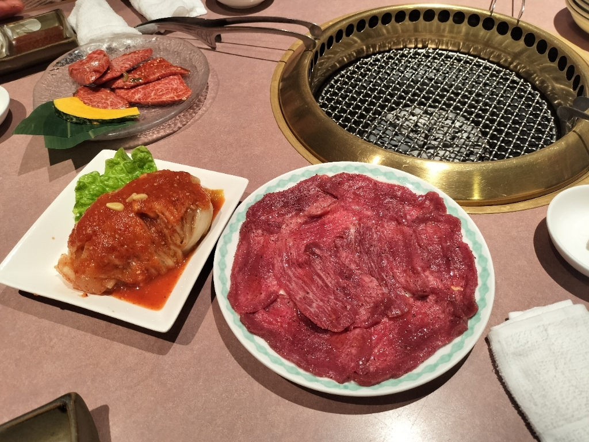
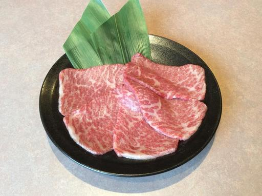
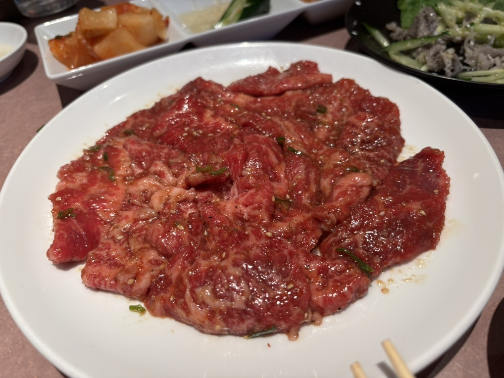
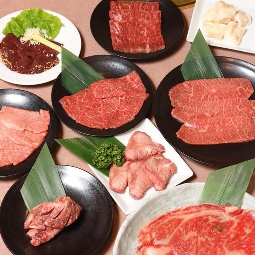
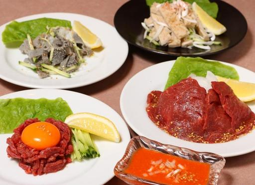
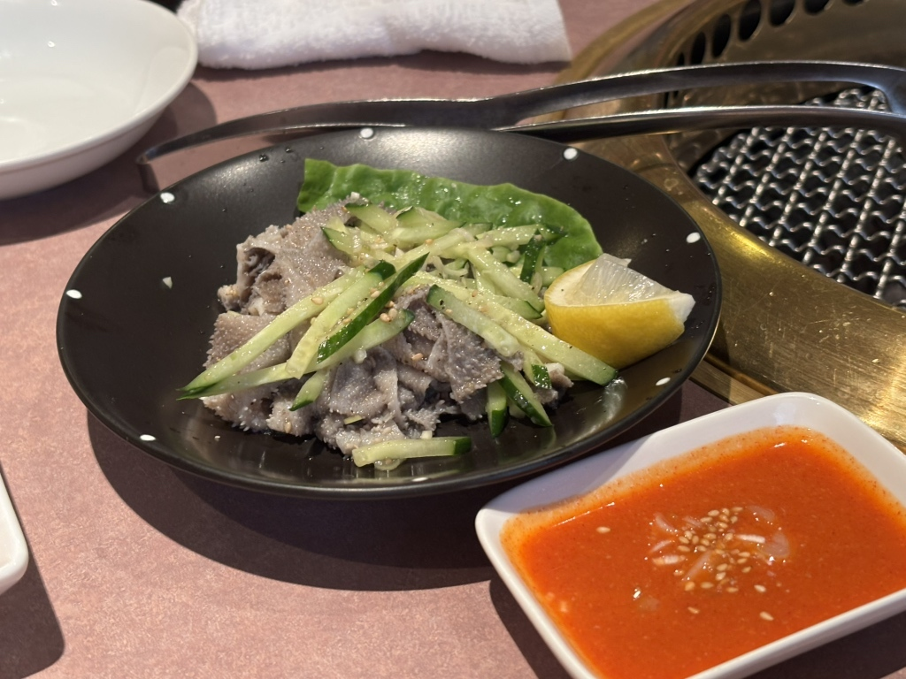
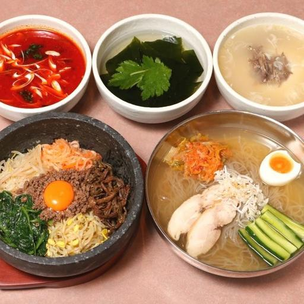
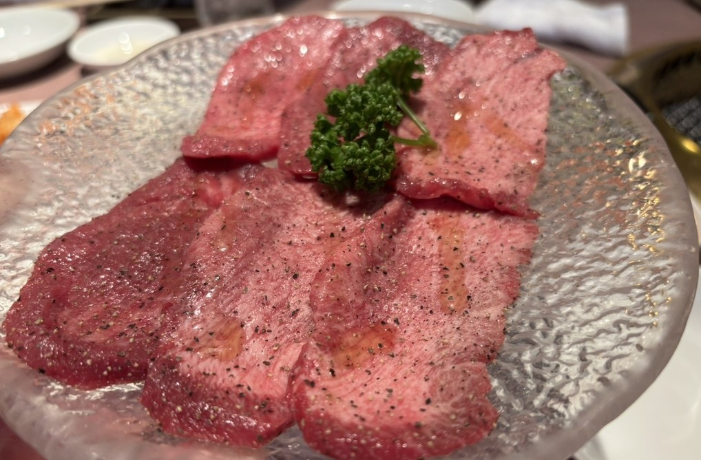

お品書き
焼き物のほかにも、クッパ、ピビンバ、チゲ鍋、麺類までご用意しております。昼はランチを十種、ご家族でお越しのときはファミリーセットもご用意しております。

「月齢30ヶ月以上」の「未経産の雌牛」赤身にこだわり、優良な牧場から山形牛を一頭買いしております。

タレまたは塩焼きをお選びいただけます。


お肉に添えて、お好みでどうぞ。
生食用のお肉には、注意書きを添えております。


ハーフもご用意しております。
クッパ・ピビンバ・麺類は、ハーフもご用意しております。チゲ鍋とおかゆは、お時間をいただきます。

お飲みものは、コーヒー・アイスコーヒー・ウーロン茶・メロンソーダをお付けできます。

お品書きにないご相談も承っております。お電話にてお気軽にお申し付けください。